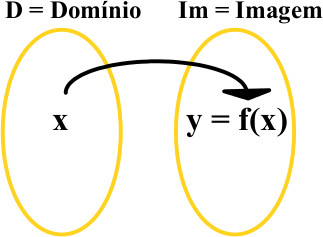

Toda vez que temos dois conjuntos e algum tipo de associação entre eles,
que faça corresponder a todo elemento do primeiro conjunto um único elemento do segundo,
ocorre uma função.
A função determina uma relação entre os elementos de dois conjuntos.
Podemos defini-la utilizando uma lei de formação, em que, para cada valor de x, temos um valor de f(x).
Chamamos x de domínio e f(x) ou y de imagem da função.
A formalização matemática para a definição de função é dada por:
Seja X um conjunto com elementos de x e Y um conjunto dos elementos de y, temos que:
f : x → y.

Tipos de Funções mais estudadas
Função constante
Função par
Função ímpar
Função afim ou polinomial do primeiro grau
Função Linear
Função crescente
Função decrescente
Função quadrática ou polinomial do segundo grau
Função modular
Função exponencial
Função logarítmica
Funções trigonométricas
Função Raiz
Para Relembrar
Autores da Página
Clara Pessôa
1°Redes
Maria Fernanda
1°Redes
CEFET-MG
O Centro Federal de Educação Tecnológica de Minas Gerais
é uma instituição federal, vinculada ao Ministério da
Educação, que se dispõe a oferecer ensino médio, cursos técnicos e
superiores.
Curso de Redes de Computadores
Este curso vai habilitar você a instalar e configurar dispositivos
de comunicação digital e programas de computadores em equipamentos
conectados em rede.
Como criar um site como esse?
Baixar o Atom, para utilizá-lo como ID
Começar fazendo o HTML
Na Web tem vários vídeos super legais para consulta :)
Agora faça o CSS e o JS
O HTML é a base do seu site, ou seja todo seu conteúdo está
embutido nele, já o CSS é a estilização do site, para deixá-lo
bonito e do jetinho que quiser, já o JS, é a parte de interação!